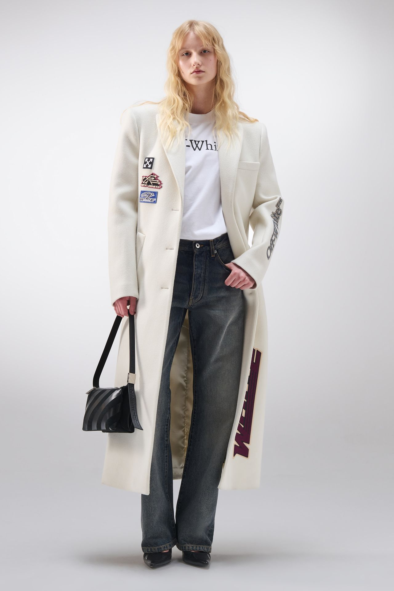
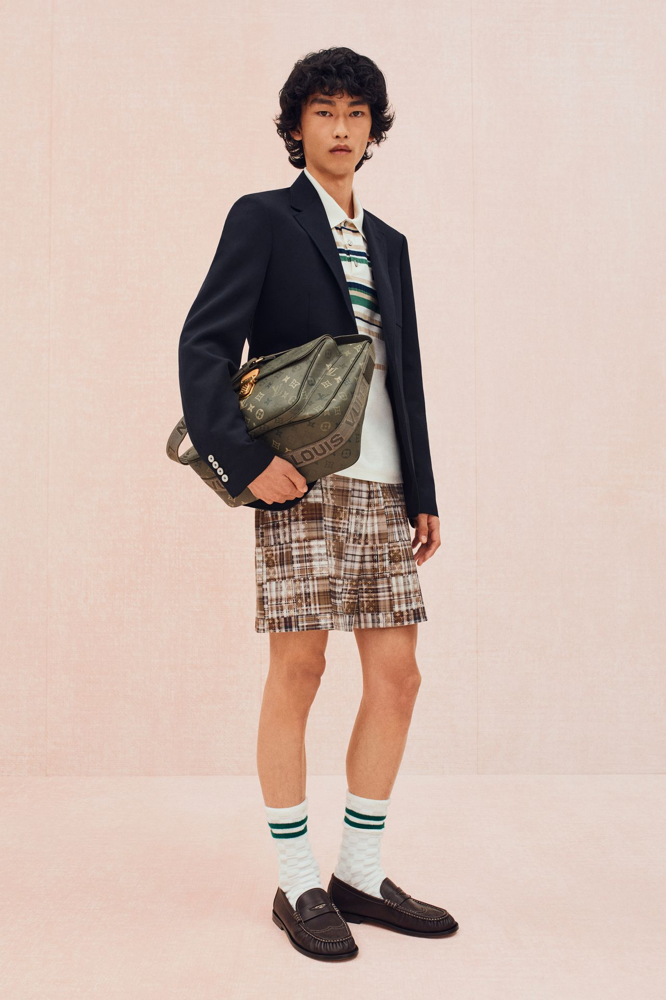
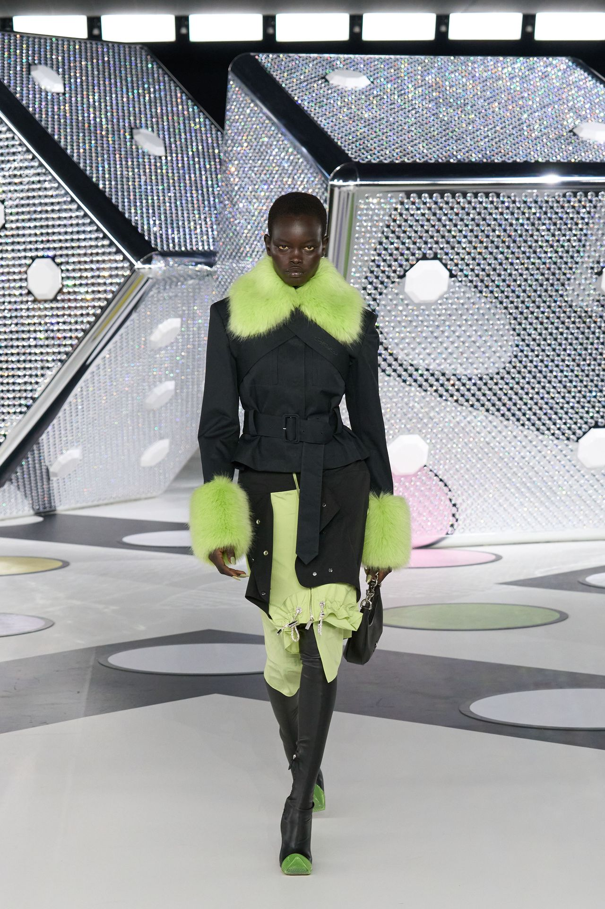

| # | 图片 | 标题 | 正文 | 标签 | 评分 | 状态 |
|---|---|---|---|---|---|---|
| 1 | |
Off-White Archive · tailoredcoat | Vogue Off-White Archive. 2024. tailored coat, editorial fashion, runway silhouette, shirt collar. | #moodboard #审美积累 #穿搭参考 #tailoredcoat #editorialfashion #秀场笔记 | 0.60 | ⏳ 待发 |
| 2 |  |
Off-White Archive · tailoredcoat | Vogue Off-White Archive. 2024. tailored coat, editorial fashion, street style, denim archive. | #moodboard #审美积累 #穿搭参考 #tailoredcoat #editorialfashion #秀场笔记 | 0.60 | ⏳ 待发 |
| 3 |  |
Louis Vuitton Runway · editorialfashion | Louis Vuitton Runway. 2024. editorial fashion, shirt collar, tailored coat, Japanese design. | #moodboard #审美积累 #穿搭参考 #editorialfashion #shirtcollar #秀场笔记 | 0.60 | ⏳ 待发 |
| 4 |  |
Off-White Archive · editorialfashion | Vogue Off-White Archive. 2024. editorial fashion, runway silhouette, tailored coat, leather detail. | #moodboard #审美积累 #穿搭参考 #editorialfashion #runwaysilhouette #秀场笔记 | 0.59 | ⏳ 待发 |
| 5 | |
Off-White Archive · denimarchive | Vogue Off-White Archive. 2024. denim archive, editorial fashion, runway silhouette, leather detail. | #moodboard #审美积累 #穿搭参考 #denimarchive #editorialfashion #秀场笔记 | 0.59 | ⏳ 待发 |